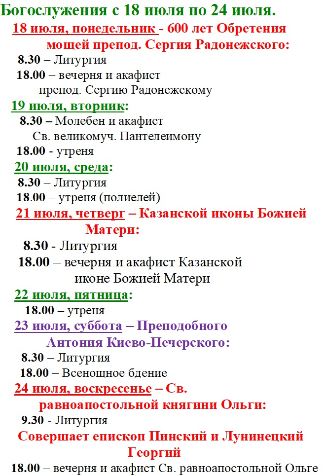
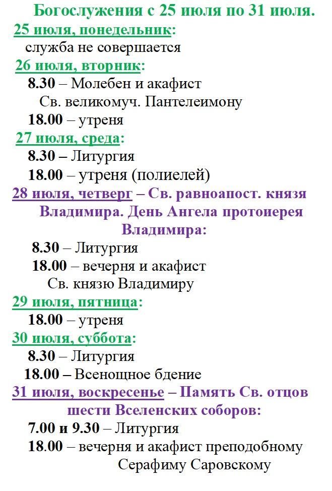
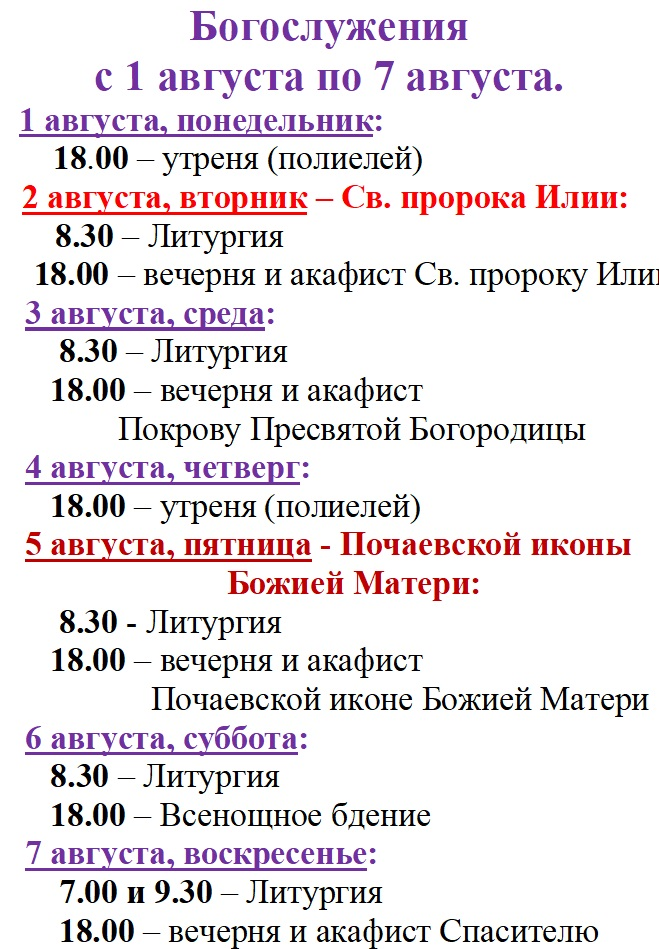
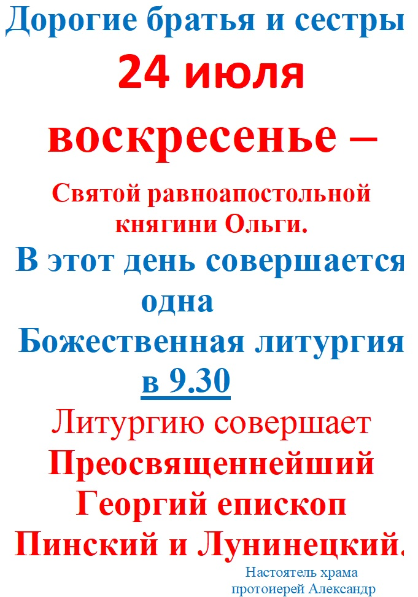

<html>
<head>
	<link rel="stylesheet" href="css/stylenew.css" />
	<link rel="stylesheet" href="css/slider1.css" >
	<meta charset="utf-8">

 	<meta name="viewport" content="width=device-width, initial-scale=1.0">
	<title></title>
<main class="wrpaper">
			<header class="header">
					<div class="header__container">
						<a href="indexnew.html" class="header__logo">
							
						</a>
						<div class="header__menu menu">
							<div class="menu__icon">
								<span></span>
							</div>
							<nav class="menu__body">
								<ul class="menu__list">
									<li><a href="indexnew.html" class="menu__link">Главная</a></li>
									<li><a href="#" class="menu__link">Расписание и календарь</a></li>
									<li>
										<a href="history_prihoda/history.html" class="menu__link">История прихода</a>
										<span class="menu__arrow"></span>
										<ul class="menu__sub-list">
											<li>
												<a href="history_prihoda/history1.html" class="menu__sub-link">Первый приходской храм</a>
											</li>
											<li>
												<a href="history_prihoda/history2.html" class="menu__sub-link">Из истории возведения Покровского храма</a>
											</li>
											<li>
												<a href="history_prihoda/history3.html" class="menu__sub-link">Установка мозаик</a>
											</li>
											<li>
												<a href="history_prihoda/history4.html" class="menu__sub-link">Покровский храм сегодня</a>
											</li>
										</ul>
									</li>
									<li>
										<a href="mozaiki_hrama/mozaiki.html" class="menu__link">Мозаики собора</a>
										<span class="menu__arrow"></span>
										<ul class="menu__sub-list">
											<li>
												<a data-goto=".page__section_1" href="mozaiki_hrama/mozaiki1.html" class="menu__sub-link">О Тебе радуется</a>
											</li>
											<li>
												<a data-goto=".page__section_2" href="mozaiki_hrama/mozaiki2.html" class="menu__sub-link">Господь Вседержитель</a>
											</li>
											<li>
												<a data-goto=".page__section_3" href="mozaiki_hrama/mozaiki3.html" class="menu__sub-link">Богоматель с ангельскими чинами</a>
											</li>
											<li>
												<a data-goto=".page__section_4" href="mozaiki_hrama/mozaiki4.html" class="menu__sub-link">Собор Архистратига Михаила</a>
											</li>
											<li>
												<a data-goto=".page__section_5" href="mozaiki_hrama/mozaiki5.html" class="menu__sub-link">Спаситель с предстоящими</a>
											</li>
											<li>
												<a data-goto=".page__section_6" href="mozaiki_hrama/mozaiki6.html" class="menu__sub-link">Спаситель с донатором</a>
											</li>
											<li>
												<a data-goto=".page__section_7" href="mozaiki_hrama/mozaiki7.html" class="menu__sub-link">Святитель Алексий Московский</a>
											</li>
											<li>
												<a data-goto=".page__section_8" href="mozaiki8.html" class="menu__sub-link">Преподобный Иосиф Волоцкий</a>
											</li>
											<li>
												<a data-goto=".page__section_9" href="mozaiki_hrama/mozaiki9.html" class="menu__sub-link">Покров Богородицы</a>
											</li>
											<li>
												<a data-goto=".page__section_10" href="mozaiki_hrama/mozaiki10.html" class="menu__sub-link">Нерукотворный образ</a>
											</li>
										</ul>
									</li>
									<li>
										<a href="molitv/molitv.html" class="menu__link">Молитвослов</a>
										<span class="menu__arrow"></span>
										<ul class="menu__sub-list">
											<li>
												<a href="molitv/utrennie.html" class="menu__sub-link">Утрение молитвы</a>
											</li>
											<li>
												<a href="molitv/vechernie.html" class="menu__sub-link">Вечерние молитвы</a>
											</li>
											<li>
												<a href="molitv/triconona.html" class="menu__sub-link">Три канона</a>
											</li>
											<li>
												<a href= "molitv/ko_prichastiu.html" class="menu__sub-link">Правило ко причащению</a>
											</li>
											<li>
												<a href= "molitv/blagodar.html" class="menu__sub-link">Благодарственные молитвы после причастия</a>
											</li>
										</ul>
									</li>
									<li>
										<a href="sunschool/sunschool.html" class="menu__link">Воскресная школа</a>
										<span class="menu__arrow"></span>
										<ul class="menu__sub-list">
											<li>
												<a href="sunschool/sunschool1.html" class="menu__sub-link">Расписание занятий</a>
											</li>
											<li>
												<a href="sunschool/sunschool2.html" class="menu__sub-link">Наша жизнь и успехи</a>
											</li>
											<li>
												<a href="sunschool/sunschool3.html" class="menu__sub-link">Маленьким для школы</a>
											</li>
										</ul>
									</li>
								</ul>
							</nav>
						</div>
					</div>
			</header>
<div>
	<div class="container">
					<div class="two-block">
						<div class="two-block__row">
							<div class="two-block__column">
								<h1 class="two-block__title">Православный календарь</h1>
								<div class="two-block__item">
									<div class="two-block__image">


	<div id="calendarr">

		<table class="block__title">
			<thead>
			<tr>
					<th><div class="nav">
							<a style="text-decoration: none;" href="#" class="prev">&#9668;</a>
						</div></th>
					<th colspan=5 aling="center" ><div style="font-size: 20px;" class="info"></div></th>
					<th><div class="nav">
							<a style="text-decoration: none; " href="#" class="next">&#9658;</a>
						</div></th>
				</tr>
			</thead>
			<thead>
			<tr>
				<th>Пн</th>
				<th>Вт</th>
				<th>Ср</th>
				<th>Чт</th>
				<th>Пт</th>
				<th>Сб</th>
				<th style="color: FireBrick">Вс</th>
			</tr>
			</thead>
			<tbody class="dates"></tbody>
			<tr><td></td></tr>
			<tr class="paXr">
				<th style="outline: 2px solid DarkGreen;">
					<script>
						var daytek;
						var date = new Date();
						daytek = date.getDate();
						document.write(daytek);
					</script>
				</th>
				<th colspan=6>Текущий день</th>
			</tr>
			<tr class="paXr">
				<th style="color: White; background-color: Red"></th>
				<th colspan=6>Пасха</th>
			</tr>
			<tr class="paXr">
				<th style="color: White; background-color: FireBrick"></th>
				<th colspan=6>Двунадесятые и великие</th>
			</tr>
			<tr class="paXr">
				<th></th>
				<th colspan=6>праздники</th>
			</tr>
			<tr class="paXr">
				<th style="border: 2px solid FireBrick;"></th>
				<th colspan=6>Дни памяти почитаемых</th>
			</tr>
			<tr class="paXr">
				<th></th>
				<th colspan=6>святых и святых икон</th>
			</tr>
			<tr class="paXr">
				<th style="background-color: LightCoral"></th>
				<th colspan=6>Сплошная седмица (нет</th>
			</tr>
			<tr class="paXr">
				<th></th>
				<th colspan=6>поста в среду и пятницу)</th>
			</tr>
			<tr class="paXr">
				<th style="background-color: MediumPurple"></th>
				<th colspan=6>Постные дни</th>
			</tr>
			<tr class="paXr">
				<th style="border: 1px solid black;"></th>
				<th colspan=6>Поминальные дни и</th>
			</tr>
			<tr class="paXr">
				<th></th>
				<th colspan=6>родительские субботы</th>
			</tr>
		</table>
	</div>

		<script>
		var date = new Date();
		var calyear=[];
		var yearglobl;
		var monthglobl;
		var yeartek;
		var monthtek;
		var daytek;
		var stday=[];
		var std=[];
		// n12vp неподвижные двунадесятые, великие праздники
		var n12vp =[[7,14,19],[15],[],[7],[],[],[7,12],[19,28],[11,21,27],[14],[],[4]];
		// npps неподвижные дни памяти почитаемых святых и святых икон
		var npps=[[9,15],[6,12],[22],[],[6,20,21,22],[3],[17,18,23,24,28],[1,2,5,9,14,29],[12],[11],[4,10,21],[19]]
		// pXr Пасха (месяц, день)
		var pXr=[[3,4,3,3,4,3,3,4,3,3,3,3,4,3,3,3,3,3,3,3],[19,2,24,16,5,20,12,2,16,8,28,13,2,24,9,29,20,5,25,17]];
		//  сплошной седмицы (месяц, день)
		var svytki=[7,8,9,10,11,12,13,14,15,16,17,19];
		// mprsubb мясопустная поминальная родительская суббота (месяц, день)
		var mprsubb=[[],[]];
		// nmifssed мытаря и фарисея начало сплошной седмицы (месяц, день)
		var nmifssed=[[],[]];
		// nmifssed мытаря и фарисея конец сплошной седмицы (месяц, день)
		var kmifssed=[[],[]];
		// nmaslssed начало масленной сплошной седмицы (месяц, день)
		var nmaslssed=[[],[]];
		// velp Великий пост (месяц, день)
		var velp=[[],[]];
		// petp Петров пост (месяц, день)
		var petp=[[],[]];
		// pVV Вербное Воскресенье (месяц, день)
		var pVV=[[],[]];
		// pVo Вознесение (месяц, день)
		var pVo=[[],[]];
		// pTr Троица (месяц, день)
		var pTr=[[],[]];
		// odp12p определение месяца и дат подвижных праздников, Великого поста
			odp12p(pXr);
		daytek = date.getDate();
		monthtek = date.getMonth();
		yeartek = date.getFullYear();
		monthglobl = monthtek;
		yearglobl = yeartek;
		stday=mas_stday(yearglobl,stday,std);
		stday=narez_std(7,9,stday);
		std=narez_std(7,9,std);
		initcalendarr(yearglobl, monthglobl, calendarr);
		//console.log(std);
			var prev=document.querySelector('.prev')
			var next=document.querySelector('.next')
			prev.addEventListener('click',function () {
				if (monthglobl==0) {monthglobl=11; yearglobl--;
					stday=[];std=[];
					stday=mas_stday(yearglobl,stday,std);
					stday=narez_std(7,9,stday);
					std=narez_std(7,9,std);
				} else {monthglobl--;}
				initcalendarr(yearglobl, monthglobl, calendarr);
			});

			next.addEventListener('click',function () {
				if (monthglobl==11) {monthglobl=0; yearglobl++;
					stday=[];std=[];
					stday=mas_stday(yearglobl,stday,std);
					stday=narez_std(7,9,stday);
					std=narez_std(7,9,std);
				} else {monthglobl++;}
				initcalendarr(yearglobl, monthglobl, calendarr);
			});
				function mas_stday(year,fstday,fsd) {
					var dwfirstm = [0,0,0,0,0,0,0,0,0,0,0,0];
					var dwlastm = [0,0,0,0,0,0,0,0,0,0,0,0];
					var result = [];
					var chunk = [];
  					var ldaymths = [31,29,31,30,31,30,31,31,30,31,30,31];
					var fh1=ffh(yearglobl);
					if (opvg(year)) {ldaymths.splice(1,1,29)} else {ldaymths.splice(1,1,28)}
					var dateyear = new Date(year,0,1);
					var dwfirst = dateyear.getDay();
					if (dwfirst==0) {dwfirst=7}
						dwfirstm[0]=dwfirst;
					for (var i = 1; i < ldaymths.length; i++) {
						if (dwfirstm[i-1]+ldaymths[i-1]%7<8) {
							dwfirstm[i]=dwfirstm[i-1]+ldaymths[i-1]%7;
							if(dwfirstm[i]==1){dwlastm[i-1]=7;}else{dwlastm[i-1]=dwfirstm[i]-1}}
						else {dwfirstm[i]=dwfirstm[i-1]+ldaymths[i-1]%7-7;if(dwfirstm[i]==1){dwlastm[i-1]=7;}else{dwlastm[i-1]=dwfirstm[i]-1}}
						if (i==11){if (opvg(year)) {dwlastm[i]=dwfirstm[0]+1} else { dwlastm[i]=dwfirstm[0]}}
					}
					for (var i = 0; i < ldaymths.length; i++) {
						fstday.push(createarr(1, ldaymths[i],1));
						fsd.push(createarr(1, ldaymths[i],1));
					}
					for (var k = 0; k < ldaymths.length; k++) {
	 					if (dwlastm[k] != 7) {
							for (var i = 1; i <= 7-dwlastm[k]; i++) {
								fstday[k].splice(fstday[k].length,0,i);
								fsd[k].splice(fsd[k].length,0,0);
							}
						}
						if (dwfirstm[k] != 1) {
							if (dwfirstm[k] == 0) {dwfirstm[k]=7}
							for (var i = 1; i <= dwfirstm[k]-1; i++) {
								fstday[k].splice(0,0,ldaymths[ldaymths.length-1]-i+1);
								fsd[k].splice(0,0,0);
							}
						}
					}

					for (var k = 0; k < 12; k++) {var l=0;
						var fstday_help;
						fstday_help=fstday[k].length;
						for (var i = 0; i < fstday_help; i++) {
							var l=1+i*9;
							fsd[k].splice(l,0,0,0,0,0,0,0,0,0);
							fstday[k].splice(l,0,0,0,0,0,0,0,0,0);
						}
					}
					for (var k = 0; k < 12; k++) {
						ifsdk=fsd[k].length/9;
						for (var i = 0; i < ifsdk; i++) {
		// Отмечает текущий день
							if (yearglobl==yeartek && monthtek==k && daytek==fsd[k][i*9]) {fsd[k].splice(i*9+1,1,1);}
		// Отмечает воскресные дни
							var ih=9*7*i+9*6+2;
							if (ih<ifsdk*9/*-dwlastm[k]*9+3 с этим не будет отмечать воскресные дни следующего месяца например: в январе воскресенье февраля*/){fsd[k].splice(ih,1,1);}
      // Остальные отметки.
							if (fsd[k][i*9]!=0) {
		// Отмечает святки
							if (k==0){ svytki.forEach(function(elem,elem1) {
									if (elem==fsd[k][i*9]){fsd[k].splice(i*9+8,1,1);}
								});}
		// Отмечает поминальные дни: 7 февраля
							if (k==1 && fsd[k][i*9]==7){
								if (i*9==63||i*9==72||i*9==81||i*9==54) {fsd[k].splice((6)*9+3,1,1);}
								if (i*9==90||i*9==99||i*9==108) {fsd[k].splice((13)*9+3,1,1);}}
						//и 9 мая
							if (k==4 && fsd[k][i*9]==9){fsd[k].splice(i*9+3,1,1);}
		// Отмечает неподвижные дни памяти почитаемых святых и святых икон
								npps[k].forEach(function(elem) {
									if (elem==fsd[k][i*9]){fsd[k].splice(i*9+4,1,1);}
								});
		// Отмечает неподвижные двунадесятые, великие праздники
								n12vp[k].forEach(function(elem) {
									if (elem==fsd[k][i*9]){fsd[k].splice(i*9+5,1,1);}
								});
		//  Однодневные посты
								if (k==8 && (fsd[k][i*9]==11||fsd[k][i*9]==27)){fsd[k].splice(i*9+7,1,1);}
								if (k==0 && (fsd[k][i*9]==18)){fsd[k].splice(i*9+7,1,1);}
								if (k==pXr[0][fh1] && fsd[k][i*9]==pXr[1][fh1]){
		//  Отмечает Пасху
									fsd[k].splice(i*9+6,1,1);
		// Отмечает сплошную Пасхальную седмицу
									var mkpsedm;
									var dkpsedm;
									if (k==4) {mkpsedm=k;dkpsedm=fsd[k][i*9]+8;}
								 	else{if(k==3 && fsd[k][i*9]<23){mkpsedm=k;dkpsedm=fsd[k][i*9]+8;}
								 		  else {mkpsedm=k+1;dkpsedm=pXr[1][fh1]-22;}}
									fsd=post(k,i+1,mkpsedm,dkpsedm,dwfirstm,fsd,8);
						// Радоница
									if (k==4) {fsd[k].splice((i+9)*9+3,1,1);}
								 	else{if(fsd[k][i*9]<22){fsd[k].splice((i+9)*9+3,1,1);}
								 		  else {fsd[k+1].splice((dwfirstm[k+1]+pXr[1][fh1]-22)*9+3,1,1);}}
								}
		// Отмечает сплошную седмицу мытаря и фарисея
								if (nmifssed[0][fh1]==k && nmifssed[1][fh1]==fsd[k][i*9]) {
									fsd=post(k,i,kmifssed[0][fh1],kmifssed[1][fh1],dwfirstm,fsd,8);
								}
		// Отмечает мясопустную поминальную субботу
								if (mprsubb[0][fh1]==k && mprsubb[1][fh1]==fsd[k][i*9]) {
									fsd[k].splice((i)*9+3,1,1);
								}
		// Отмечает сплошную масличную седмицу
								if (nmaslssed[0][fh1]==k && nmaslssed[1][fh1]==fsd[k][i*9]) {
									fsd=post(k,i,velp[0][fh1],velp[1][fh1],dwfirstm,fsd,8);
								}
						// Троицкая суббота (красивое решение)
								if (k==pTr[0][fh1] && fsd[k][i*9]==pTr[1][fh1]){
									if (pTr[1][fh1]!=1) {fsd[k].splice((i-1)*9+3,1,1);}
								 	else{fsd[k-1].splice((dwfirstm[k-1]+ldaymths[k-1]-2)*9+3,1,1);}
		// Отмечает сплошную Троицкую седмицу
									var mktrsedm,dktrsedm;
									if (k=5) {
										if(fsd[k][i*9]<23){
											mktrsedm=k;dktrsedm=fsd[k][i*9]+8;}
										 else {mktrsedm=k+1;dktrsedm=pTr[1][fh1]-22;}
										}
								 	else{
								 		 if(fsd[k][i*9]<23){mktrsedm=k;dktrsedm=fsd[k][i*9]+8;}
								 		 else {mktrsedm=k+1;dktrsedm=pTr[1][fh1]-23;}
								 		}
									fsd=post(k,i+1,mktrsedm,dktrsedm,dwfirstm,fsd,8);
								}
						// Димитровская суббота
								if (k==10 && fsd[k][i*9]==1){
									var dpsb=1;
									while(dpsb<8){
										if (dwfirstm[k]==3) {fsd[k-1].splice((dwfirstm[k-1]+27)*9+3,1,1);dpsb=9;}
										 else {if (dwfirstm[k]-1+dpsb==6) {fsd[k].splice((dpsb-1)*9+3,1,1);dpsb=9;}
										}dpsb++;
									}
								}
		//  Отмечает неподвижные многодневные посты:
			// Рождественский пост:
						//  январь
								if (k==0 && fsd[k][i*9]==1) {
									fsd=post(k,i,0,7,dwfirstm,fsd,7)}
						// с 28 ноября по 30 декабря включительно
								if (k==10 && fsd[k][i*9]==28) {
									fsd=post(k,i,11,31,dwfirstm,fsd,7);}
						// 31 декабря
								if (k==11 && fsd[k][i*9]==31){fsd[k].splice(i*9+7,1,1);}
			// Успенский пост
								if (k==7 && fsd[k][i*9]==14) {
									fsd=post(k,i,7,28,dwfirstm,fsd,7)}
		// Отмечает подвижные посты:
			//  Петров пост
								if (k==pTr[0][fh1] && fsd[k][i*9]==pTr[1][fh1]){
									var lmpTr=pTr[0][fh1];
									var ldpTr=pTr[1][fh1];
									var petpm=0;
									var petpd=0;
									if (k==4 && ldpTr<24){petpm=4; petpd=ldpTr+8;}
									if (k==4 && ldpTr>24){petpm=5; petpd=ldpTr-23;}
									if (k==5 && ldpTr<23){petpm=5; petpd=ldpTr+8;}
									if (k==5 && ldpTr>23){petpm=6; petpd=ldpTr-22;}
								}
								if (k==petpm && fsd[k][i*9]==petpd) {
									fsd=post(k,i,6,12,dwfirstm,fsd,7)
								}
								if (velp[0][fh1]==k && velp[1][fh1]==fsd[k][i*9]){
			//  Великий пост
									fsd=post(k,i,pXr[0][fh1],pXr[1][fh1],dwfirstm,fsd,7);

			/*
			 5 conditions - negative
			 var 1 condition
			 var 2 condition ...

			 logic operators && and ||

			 if(1condition || 2condition || 3 condition) {
				do/don't this...
			 }
			*/


			//  Отмечает поминальные субботы в великом посту
		if (fsd[k][i*9+45]==0) {fsd[k+1].splice(45+63+3,1,1);fsd[k+1].splice(45+2*63+3,1,1);fsd[k+1].splice(45+3*63+3,1,1);}
		 else {if (fsd[k][i*9+45+9]==0) {fsd[k+1].splice(12*9+3,1,1);fsd[k+1].splice(19*9+3,1,1);fsd[k+1].splice(26*9+3,1,1);}
		 	    else {if (fsd[k][i*9+45+9]==ldaymths[k]) {fsd[k+1].splice(45+3,1,1);fsd[k+1].splice(45+63+3,1,1);fsd[k+1].splice(45+2*63+3,1,1);}
		 	   		  else {if (fsd[k][i*9+45+63]==0) {fsd[k+1].splice(45+3,1,1);fsd[k+1].splice(45+63+3,1,1);fsd[k+1].splice(45+2*63+3,1,1);}
		 	   		  		else {fsd[k].splice(i*9+45+63+3,1,1);//2-я суббота поста
		 	   		  			if (fsd[k][i*9+45+63+9]==0) {fsd[k+1].splice(12*9+3,1,1);fsd[k+1].splice(19*9+3,1,1);}
		 	   		  			 else {if (fsd[k][i*9+45+63+9]==ldaymths[k]) {fsd[k+1].splice(45+3,1,1);fsd[k+1].splice(45+63+3,1,1);}
		 	   		  			 		else {if (fsd[k][i*9+45+2*63]==0) {fsd[k+1].splice(45+3,1,1);fsd[k+1].splice(45+63+3,1,1);}
		 	   		  			 			   else {fsd[k].splice(i*9+45+2*63+3,1,1);//3-я суббота поста
		 	   		  			 			   		if (fsd[k][i*9+45+2*63+9]==0) {fsd[k+1].splice(12*9+3,1,1);}
		 	   		  			 			   		 else {
		 	   		  			 			   			 if (fsd[k][i*9+45+2*63+9]==ldaymths[k]) {fsd[k+1].splice(45+3,1,1);}
		 	   		  			 	 					 else {if(fsd[k][i*9+45+3*63]==0){fsd[k+1].splice(45+3,1,1);}
		 	   		  			 	 			   			    else{fsd[k].splice(i*9+45+3*63+3,1,1);//4-я суббота поста
		 	   		  			 	 			   }}}}}}}}}
		 }
		}
		//  Отмечает подвижные двунадесятые праздники
								if ((pVV[0][fh1]==k && pVV[1][fh1]==fsd[k][i*9])||(pVo[0][fh1]==k && pVo[1][fh1]==fsd[k][i*9])||(pTr[0][fh1]==k && pTr[1][fh1]==fsd[k][i*9])){fsd[k].splice(i*9+5,1,1);}
		//  Отмечает Пасху
							}
						}
					}
					for (var k = 0; k < 12; k++) {
// Отменяет выделения поминальных суббот в посту если они попадают на 22.03,6.04,7.04
					  if (k==2||k==3) {
						for (var i1 = 0; i1 < fsd.length; i1++) {
							if (k==2 && fsd[k][i1*9]==22 && fsd[k][i1*9+3]==1) {fsd[k].splice(i1*9+3,1,0);}
							if (k==3 && fsd[k][i1*9+3]==1 && (fsd[k][i1*9]==6||fsd[k][i1*9]==7)) {fsd[k].splice(i1*9+3,1,0);}
						}}
						var ifsdk=fsd[k].length/(9*7);//console.log('ifsdk=',ifsdk);
						for (var i = 0; i < ifsdk; i++) {
		// Отмечает пост в среду и пятницу
							if (fsd[k][i*63+18]!=0) {
							var isr=i*9*7+2*9+7;
							var ipt=i*9*7+4*9+7;
							if (fsd[k][isr+1]==0){fsd[k].splice(isr,1,1);}
							if (fsd[k][ipt+1]==0){fsd[k].splice(ipt,1,1);
												}   }
 						}
					}
					return fstday;
				}
	// post отмечает в массиве fsd (стиль дня для вывода на экран) многодневные посты и сплошные седмицы
		function post(k1,i1,mkpost,dkpost,fdwfirstm,ffsd,ik){
			while(k1<mkpost || (k1==mkpost && ffsd[k1][i1*9]<dkpost)){
				if (ffsd[k1][i1*9]==0) {
					if (ffsd[k1+1][0] > 0){k1++;i1=0;}
					else {k1++; i1=fdwfirstm[k1]-1;}
				}
				ffsd[k1].splice(i1*9+ik,1,1);
				if (i1*9==ffsd[k1].length-9) {if (ffsd[k1+1][0]>0) {k1++;i1=0;} else {k1++; i1=fdwfirstm[k1]-1;} }
				else{i1++;}
			}return ffsd;
		}
		function createarr(from, to,fk){
			if (fk==1) {
			var arr1 = [];
			for (var i = from; i <= to; i++) {
				arr1.push(i);
			}
			return arr1;

			} else {
			var arr = [];
			for (var i = from; i <= to; i++) {
				arr.push(i);
			}
			return arr;}
		}
// ffh определяет месяц Пасхи
		function ffh(num) {
			return num-2020;
		}
// odp12p определяет даты подвижных двунадесятых праздников и начала Великого поста
		function odp12p(fpXr) {
				for (var i = 0; i < fpXr[0].length; i++) {
					switch (fpXr[0][i]){
						case 3:
	// Определение месяца и дня мясопустной родительской поминальной субботы
							if (fpXr[1][i]>26) {mprsubb=vkladka(mprsubb,i,-1,-26);}
							 else {if (opvg(i+2020)) {mprsubb=vkladka(mprsubb,i,-2,3);}
								 else {mprsubb=vkladka(mprsubb,i,-2,2);}
							 }

	// Определение месяца и дня начала Великого поста
							if (fpXr[1][i]>17) {velp=vkladka(velp,i,-1,-17);}
							 else {if (opvg(i+2020)) {velp=vkladka(velp,i,-2,12);}
								 else {velp=vkladka(velp,i,-2,11);}
							 }
	// Определение месяца и дня Вербного Воскресенья
							if (fpXr[1][i]<=7) {pVV=vkladka(pVV,i,-1,24);}
							 else {pVV=vkladka(pVV,i,0,-7);}
	// Определение месяца и дня Вознесения
							if (fpXr[1][i]<=22) {pVo=vkladka(pVo,i,1,9);}
							 else {pVo=vkladka(pVo,i,2,-22);}
	// Определение месяца и дня Троицы
							if (fpXr[1][i]<=12) {pTr=vkladka(pTr,i,1,19);}
							 else {pTr=vkladka(pTr,i,2,-12);}
	// Определение месяца и дня начала сплошной масляной седмицы
							if (fpXr[1][i]>24) {nmaslssed=vkladka(nmaslssed,i,-1,-24);}
							 else {if (opvg(i+2020)) {nmaslssed=vkladka(nmaslssed,i,-2,5);}
							 		else {nmaslssed=vkladka(nmaslssed,i,-2,4);}}
	// Определение месяца и дня начала мытаря и фарисея сплошной седмицы
							if (opvg(i+2020)) {if(fpXr[1][i]<10){nmifssed=vkladka(nmifssed,i,-3,22);}else {nmifssed=vkladka(nmifssed,i,-2,-9)}}
							 else {if(fpXr[1][i]<11){nmifssed=vkladka(nmifssed,i,-3,21);}else{nmifssed=vkladka(nmifssed,i,-2,-10);}}
	// Определение месяца и дня конца мытаря и фарисея сплошной седмицы
							if (opvg(i+2020)) {kmifssed=vkladka(kmifssed,i,-2,-2);}else{kmifssed=vkladka(kmifssed,i,-2,-3);}
						break;
						case 4:
	// Определение месяца и дня мясопустной родительской поминальной субботы
							mprsubb=vkladka(mprsubb,i,-2,4);
	// Определение месяца и дня начала Великого поста
							velp=vkladka(velp,i,-2,13);
	// Определение месяца и дня Вербного Воскресенья
							if (fpXr[1][i]<=7) {pVV=vkladka(pVV,i,-1,23);}
							 else {pVV=vkladka(pVV,i,0,-7);}
	// Определение месяца и дня Вознесения
							pVo=vkladka(pVo,i,1,8);
	// Определение месяца и дня Троицы
							pTr=vkladka(pTr,i,1,18);
	// Определение месяца и дня начала масляной сплошной седмицы
							nmaslssed=vkladka(nmaslssed,i,-2,6);
	// Определение месяца и дня начала сплошной мытаря и фарисея седмицы
							if (opvg(i+2020)) {nmifssed=vkladka(nmifssed,i,-3,21);}
							 		else {nmifssed=vkladka(nmifssed,i,-3,20);}
	// Определение месяца и дня конца сплошной мытаря и фарисея седмицы
							if (fpXr[1][i]==1) {if (opvg(i+2020)){kmifssed=vkladka(kmifssed,i,-3,28);} else {kmifssed=vkladka(kmifssed,i,-3,27);}}
							 else {kmifssed=vkladka(kmifssed,i,-2,-1);}
						break;
					}
				}
		}
// (пока не используется) создаёт массив с размерами ir массива pXr
		function massrpXr(ir) {
			var massr=[];
			for (var i = 0; i < ir; i++) {
				massr.push(0);
			}return massr;
		}
	// vkladka вкладывает элемент в массив
		function vkladka(massiv,i1,a0,a1) {
				massiv[0].push(pXr[0][i1]+a0);
				massiv[1].push(pXr[1][i1]+a1);
				return massiv;
		}
			// opvg определяет высокосный год
				function opvg(year) {
					if ((year % 4 == 0 && year % 100 != 0) || year % 400 == 0) {
						return true;
					}else {
						return false;
					}
				}
// narez_std нарезает по неделям двумерный массив std (все дни года) в 4-х мерный массив
				function narez_std(num,num1,arr1) {
					var result3 = [];
					var result2 = [];
					for (var k = 0; k < 12; k++) {
						var result1 = [];
						var itercount =arr1[k].length / (num*num1);
						for (var i = 0; i < itercount; i++) {
							var result0 = [];
							var chunk = [];
							for (var j = 0; j < num; j++) {
								chunk =arr1[k].splice(0,num1);
								result0.push(chunk);
							}
							result1.push(result0);
						}
						result2.push(result1);
					}
					return result2;
				}
// narez_stday нарезает по неделям двумерный массив stday (все дни года) в 3-х мерный массив
				function narez_stday(num, arr1) {
					var result1 = [];
					for (var k = 0; k < 12; k++) {
						var result = [];
						var chunk = [];
						var itercount =arr1[k].length / num;
						for (var i = 0; i < itercount; i++) {
							chunk = arr1[k].splice(0,num);
							result.push(chunk);
						}
						result1.push(result);
					}
					return result1;
				}
			function initcalendarr(year, month, calendarr) {
				var dates = calendarr.querySelector('.dates');
				var info = calendarr.querySelector('.info');
				createtable(stday[month],std[month],dates,month);
				showinfo(year,month,info);
			}
			function showinfo(year,month,elem) {
				elem.innerHTML=getmonthname(month)+'   '+year;
			}
			function getmonthname(nam) {
				var monthes = ['Январь','Февраль','Март','Апрель','Май','Июнь',
				               'Июль','Август','Сентябрь','Октябрь','Ноябрь','Декабрь'];
				return monthes[nam];
			}
// Выводит на экран календарь (1 месяц)
				function createtable(arr,arr1,parent,month){
					parent.innerHTML='';
					for (var i = 0; i < arr.length; i++) {
						var tr = document.createElement('tr');
						for (var j = 0; j < arr[i].length; j++) {
							var td = document.createElement('td');
							for (var jo = 0; jo < 9; jo++) {
								switch(jo){
									case 0:
										if (arr1[i][j][0]==0){td.style="color: LightBlue";}
									break;


									case 1:
										if (arr1[i][j][1]==1){td.style="outline: 2px solid DarkGreen;";}
									break;
									case 2:
										if (arr1[i][j][2]==1 && arr1[i][j][0]!=0){td.style="color: FireBrick";}
										if (arr1[i][j][2]==1 && arr1[i][j][0]!=0 && arr1[i][j][1]==1){td.style="outline: 2px solid DarkGreen; color: FireBrick;";}
									break;
									case 3:
										if (arr1[i][j][3]==1){td.style="border: 1px solid black;";}
										if (arr1[i][j][3]==1 && arr1[i][j][2]==1){td.style="border: 1px solid black; color: FireBrick";}
										if (arr1[i][j][3]==1 && arr1[i][j][1]==1){td.style="outline: 2px solid DarkGreen;border: 2px solid black;";}
										if (arr1[i][j][3]==1 && arr1[i][j][2]==1 && arr1[i][j][1]==1){td.style="outline: 2px solid DarkGreen;border: 2px solid black; color: FireBrick";}
									break;
									case 4:
										if (arr1[i][j][4]==1){td.style="border: 2px solid FireBrick;";}
										if (arr1[i][j][4]==1 && arr1[i][j][2]==1 && arr1[i][j][0]!=0){td.style="border: 2px solid FireBrick; color: FireBrick";}
										if (arr1[i][j][4]==1 && arr1[i][j][1]==1){td.style="outline: 2px solid DarkGreen; border: 2px solid FireBrick; color: FireBrick;";}
										if (arr1[i][j][4]==1 && arr1[i][j][2]==1 && arr1[i][j][1]==1){td.style="outline: 2px solid DarkGreen;border: 2px solid FireBrick; color: FireBrick;";}
									break;
									case 5:
										if (arr1[i][j][5]==1){td.style="color: White; background-color: FireBrick";}
										if (arr1[i][j][5]==1 && arr1[i][j][1]==1){td.style="outline: 2px solid DarkGreen; color: White; background-color: FireBrick;";}
									break;
									case 6:
										if (arr1[i][j][6]==1){td.style="color: White; background-color: red";}
										if (arr1[i][j][6]==1 && arr1[i][j][1]==1){td.style="outline: 2px solid DarkGreen; color: White; background-color: red;";}
									break;
									case 7:
										if (arr1[i][j][7]==1 && arr1[i][j][0]!=0){td.style="background-color: MediumPurple";}
										if (arr1[i][j][7]==1 && arr1[i][j][0]!=0 && arr1[i][j][1]==1){td.style="outline: 2px solid DarkGreen; background-color: MediumPurple;";}
										if (arr1[i][j][7]==1 && arr1[i][j][2]==1 && arr1[i][j][0]!=0){td.style="background-color: MediumPurple; color: FireBrick";}
										if (arr1[i][j][7]==1 && arr1[i][j][2]==1 && arr1[i][j][0]!=0 && arr1[i][j][1]==1){td.style="outline: 2px solid DarkGreen;background-color: MediumPurple; color: FireBrick";}
										if (arr1[i][j][7]==1 && arr1[i][j][3]==1 && arr1[i][j][0]!=0){td.style="background-color: MediumPurple; border: 1px solid black;";}
										if (arr1[i][j][7]==1 && arr1[i][j][3]==1 && arr1[i][j][0]!=0 && arr1[i][j][1]==1){td.style="outline: 2px solid DarkGreen;background-color: MediumPurple; border: 2px solid black;";}
										if (arr1[i][j][7]==1 && arr1[i][j][0]!=0 && arr1[i][j][4]==1){td.style="background-color: MediumPurple; border: 2px solid FireBrick;";}
										if (arr1[i][j][7]==1 && arr1[i][j][0]!=0 && arr1[i][j][4]==1 && arr1[i][j][1]==1){td.style="outline: 2px solid DarkGreen;background-color: MediumPurple; border: 2px solid FireBrick;";}
										if (arr1[i][j][7]==1 && arr1[i][j][0]!=0 && arr1[i][j][4]==1 && arr1[i][j][2]==1 && arr1[i][j][0]!=0){td.style="background-color: MediumPurple;border: 2px solid FireBrick; color: FireBrick";}
										if (arr1[i][j][7]==1 && arr1[i][j][0]!=0 && arr1[i][j][4]==1 && arr1[i][j][2]==1 && arr1[i][j][0]!=0 && arr1[i][j][1]==1){td.style="outline: 2px solid DarkGreen; background-color: MediumPurple;border: 2px solid FireBrick; color: FireBrick;";}
										if (arr1[i][j][7]==1 && arr1[i][j][5]==1 && arr1[i][j][0]!=0){td.style="color: White; background-color: FireBrick; border: 3px solid MediumPurple;";}
										if (arr1[i][j][7]==1 && arr1[i][j][5]==1 && arr1[i][j][0]!=0 && arr1[i][j][1]==1){td.style="outline: 2px solid DarkGreen;color: White; background-color: FireBrick; border: 3px solid MediumPurple;";}
									break;
									case 8:
										if (arr1[i][j][8]==1 && arr1[i][j][0]!=0){td.style="background-color: LightCoral";}
										if (arr1[i][j][8]==1 && arr1[i][j][0]!=0 && arr1[i][j][1]==1){td.style="outline: 2px solid DarkGreen; background-color: LightCoral;";}
										if (arr1[i][j][8]==1 && arr1[i][j][2]==1){td.style="color: FireBrick; background-color: LightCoral;";}
										if (arr1[i][j][8]==1 && arr1[i][j][2]==1 && arr1[i][j][1]==1){td.style="outline: 2px solid DarkGreen; color: FireBrick; background-color: LightCoral;";}
										if (arr1[i][j][8]==1 && (arr1[i][j][0]==19||arr1[i][j][0]==14) && month==0){td.style="color: White; background-color: FireBrick;";}
										if (arr1[i][j][8]==1 && arr1[i][j][0]==19 && month==0 && arr1[i][j][1]==1){td.style="outline: 2px solid DarkGreen; color: White; background-color: FireBrick;";}
										if (arr1[i][j][8]==1 && arr1[i][j][0]!=0 && arr1[i][j][4]==1){td.style="border: 2px solid FireBrick; background-color: LightCoral;";}
										if (arr1[i][j][8]==1 && arr1[i][j][0]!=0 && arr1[i][j][4]==1 && arr1[i][j][1]==1){td.style="outline: 2px solid DarkGreen; border: 2px solid FireBrick; background-color: LightCoral;";}
										if (arr1[i][j][8]==1 && arr1[i][j][4]==1 && arr1[i][j][2]==1 && arr1[i][j][0]!=0){td.style="border: 2px solid FireBrick; background-color: LightCoral; color: FireBrick;";}
										if (arr1[i][j][8]==1 && arr1[i][j][4]==1 && arr1[i][j][2]==1 && arr1[i][j][0]!=0 && arr1[i][j][1]==1){td.style="outline: 2px solid DarkGreen; border: 2px solid FireBrick; background-color: LightCoral; color: FireBrick;";}
									break;
								}
							}
							td.innerHTML = arr[i][j][0];
							tr.appendChild(td);
						}
						parent.appendChild(tr);
					}
				}
	</script>
									</div>
								</div>
							</div>
							<div class="two-block__column">
								<h1 class="two-block__title">Расписание богослужений</h1>
								<div class="two-block__item">
									<div class="two-block__image">
										<div class="slider">
											<div class="slider__item">
												
											</div>
											<div class="slider__item">
												
											</div>
											<div class="slider__item">
												
											</div>
											<div class="slider__item">
												
											</div>
										</div>
									</div>
									<div class="two-block__text">
										колонка 4 текст
									</div>
								</div>
							</div>
						</div>
					</div>
		</div>
				<div class="container">
				</div>
</div>
</main>
</head>
<body>
<!-- 		<div class="wrpaper">
		</div>
 -->	<script src="js/scr3 - копия.js"></script>
	<script src="https://code.jquery.com/jquery-3.6.0.min.js"></script>
	<script src="js/slick.min.js"></script>
	<script src="js/slider.js"></script>
</body>
</html>